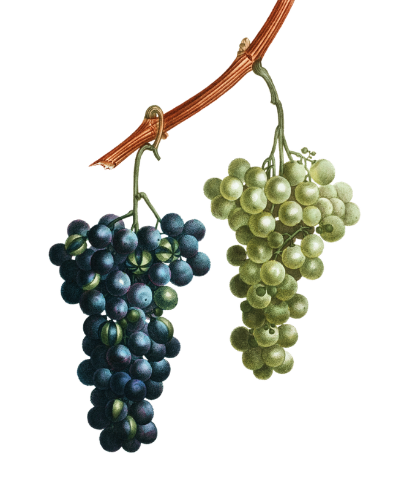

Food
Farming
Food Farming is proud of our past and excited about our future. We strive to continue being one of India and New Zealand's great food companies, offering quality fruits and vegetable.
read more

Food Farming is proud of our past and excited about our future. We strive to continue being one of India and New Zealand's great food companies, offering quality fruits and vegetable.
read more
The food we eat has a huge effect on the environment and on our own personal carbon footprint for a variety of reasons.
Eco friendly food refers to food that has been produced, manufactured, packaged, transported and consumed in a far more eco friendly way than the average food item. In doing so there is far less demand on the earth’s limited resources, food is often healthier, fresher and more flavorsome and without wanting to be overly dramatic those who consume it will be helping to preserve the planet for future generations.
meet eco lifeOrganic food is produced to high farming standards that avoid the use of unnecessary chemicals. Whilst organic food may be more expensive in many cases, the small “green tax” may well be worth it for environmentally-conscious individuals.
It’s possible to buy virtually any food you like at any time of year these days. You can have strawberries at Christmas if you like thanks to them either being shipped in from warmer countries or from producing them under glass with artificial lighting and heating.
Food packaging is a major concern for environmentalists thanks to the huge amount of plastic waste that is disposed of every day round the world
Of course like with so many other green initiatives eco food is really all about “shades of grey” with some foods being more eco friendly than others. With so many elements involved in the food chain small changes can make big differences though of course producing as much of your own food at home, on a small holding or with an allotment is arguably the easiest way to get involved in the eco food movement.